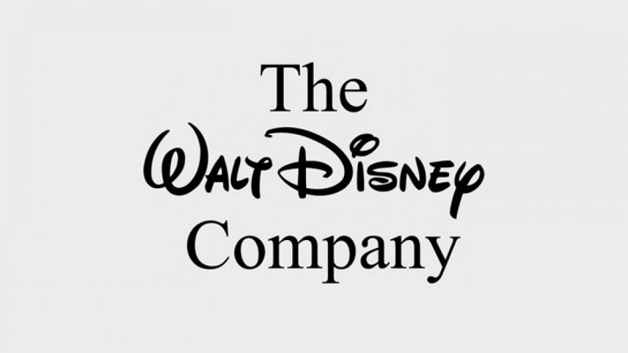

ბევრისთვის საყვარელი და ზღაპრული სამყაროს შემქმნელი უოლტ დისნეის კომპანია წარმატებული ბიზნეს მოდელია, რომლის წლიურმა შემოსავალმა 2019 წელს 70 მილიარდი აშშ დოლარი შეადგინა, ხოლო მოგებამ 11 მილიარდი დოლარი. კომპანიის აქტივები კი 194 მილიარდი დოლარია.
დისნეი ყევლაზე მაღალშემოსავლიანი კინოსტუდიაა, მაგრამ დღეს ის მხოლოდ კინოსტუდია არ არის, უამრავ ბიზნესს აერთიანებს გართობის სფეროში.
1923 წელს, ირლანდიელი ემიგრანეტბის შთამომავლებმა, ძმებმა უოლტ და როი დისნეებმა კომპანია “ძმები დისნეების მულტფილმების სტუდია“ დააარსეს. მათი პირველი ანიმაციური უხმო ფილმი “ალისას საოცრებათა ქვეყანა“ იყო. 1926 წელს წელს კომპანიას სახელი შეუცვალეს და “უოლტ დისნეის სტუდია“ დაარქვეს. შემოქმედებითი საქმეს უოლტი უძღვებოდა, რადგან ძალიან კარგად ხატავდა, ხოლო კომპანიის ფინანსურ მხარეს როი მართავდა.
1928 წლამდე კომპანიის საქმეები არც თუ ისე წარმატებით მიდიოდა. 1928 წელს დისნეიმ შექმნა ახალი პერსონაჟი - თაგვი, სახელად მორტიმერი. უოლტის მეუღლეს ეს სახელი არ მოსწონდა და მოგვიანებით პერსონაჟს მიკი მაუსი დაარქვეს. მიკი მაუსი კომპანიის სახე გახდა. ამავე წელს მიკი მაუსი გაახმოვანეს და დიდი პოპულარობა მოიპოვა.
1932 წელს დისნეიმ კონტრაქტი გააფორმა კომპანია “ტექნოქოლორთან“ და ფერადი მულტფილმების გამოშვება დაიწყო. პირველი ფერადი მულტფილმი იყო “ყვავილები და ხეები“.
1934 წელს კომპანიამ პირველი ხანგრძლივი ანიმაციური ფილმის კეთება დაიწყო და 3 წელიწადში, 1937 წლის ბოლოს ეკრანებზე გამოვიდა “ფიფქია და შვიდი ჯუჯა“. ეს იყო სრულმეტრაჟიანი, ფერადი, ხმოვანი ფილმი. 1939 წელს “ფიფქია და შვიდი ჯუჯა“ ყველაზე მაღალშემოსავლიანი ფილმი გახდა.
1939 წელს “ფიფქია და შვიდი ჯუჯადან“ ნაშოვნი ფულით დისნეიმ ახალი დიდი კინოსტუდია ააშენა კალიფორნიაში, ქალაქ ბერბანკში, სადაც დღეს კომპანიის სათავო ოფისია განთავსებული. ამავე წელს კომპანიამ პირველად გაყიდა აქციები საჯაროდ. ახალმა წარამტებულმა პროექტებმაც არ დააყოვნა. 1940 წელს გამოვიდა “პინოქიო“, 1941 წელს “დუმბო“ და 1942 წელს “ბემბი“. მეორე მსოფლიო ომის დროს კომპანიის შემოსავალი შემცირდა. მთავრობამ დისნეის დაავალა ომის თემაზე გაეკეთებინათ ფილმები. ომის თემებზე შექმნილ ფილებში გამოჩნდა ახალი პერსონაჟი დონალდ დაქი.
1954 წლამდე დისნეის 8 ფილმმა აიღო ოსკარი. ომის შემდეგ პირველი სრულმეტრაჟიანი ფილმი “კონკია“ გამოუშვეს 1950 წელს, რომელიც წარმატებით გაიყიდა. მას მოჰყვა “ალისა საოცრებათა სამყაროში“ და “პიტერ პენი“. 1954 წლიდან ტელევიზია “ABC“-მ რეგულარულად დაიწყო დისნეის ფილმების ჩვენება.
1955 წელს უოლტ დისნეი ახალ საოცრებას ქმნის კალიფორნიაში. ეს არის გასართობი პარკი დისნეილენდი, სადაც შვილებთან ერთად მშობლებსაც შეეძლოთ გართობა.
1966 წელს უოლტ დისნეი გარდაიცვალა. კომპანიას სათავეში მისი ძმა როი ჩაუდგა, რომელმაც 1971 წლამდე მართა.
1983 წლიდან დისნეის სატელევიზიო არხმა - “The Disney Channel“-მა დაიწყო მაუწყებლობა. ამავე წელს, აშშ-ის გარეთ, კერძოდ კი ტოკიოში პირველი დისნეილენდი გაიხსნა. 1992 წელს კი პარიზის დისნეილენდი გაიხსნა. გასართობი პარკები საკმაოდ მომგებიანად, სტაბილურად მუშაობდნენ, როცა ფილმების ინდუსტრიაში იყო ვარდნები და აღმასვლები.
1990-იანი წლებიდან კომპანიამ მნიშვნეოვანი ინვესტიციები ჩადო ტელევიზიებში, კერძოდ “ABC“ და “ESPN“ შეიძინა. სხვადასხვა ტელევიზიების და სტუდიების შეძენა დისნეიმ 2000-იან წლებშიც გააგრძელა, ასევე იხსნებოდა დისნეილენდის ახალი პარკები. 2005 წელს გაიხსნა ჰონგ-კონგის დისნეილენდი. აღსანიშნავია, 2006 წელს “პიქსარის“ და 2009 წელს “მარველის“ შეძენა, რომელშიც დისნეიმ 4.2 მილიარდი დოლარი გადაიხადა. 2017 წელს შეიძინა “21st Century Fox“, რომელშიც 52 მილიარდი დოლარი გადაიხადა.
1991 წელს დისნეის შემოსავალი 6 მილიარდი დოლარი იყო და მას შემდეგ თითქმის ყოველ წელს იზრდებოდა. 2001 წელს უკვე 26 მილიარდი დოლარი იყო. 2011 წელს - 41 მილარდი, 2015 წელს 50 მილიარდს გადასცდა და გასულ წელს თითქმის 70 მილიარდი დოლარი შეადგინა. 70 მილიარდიდან 26 მილიარდი დისნეილენდის პარკებზე და ნივთების გაყიდვაზე მოდის, 25 მილიარდი დისნეის სატლევიზიო არხებზე, 20 მილიარდი კი ფილმებზე.
დღემდე ვერავინ მოხსნა უოლტ დისნეის რეკორდი, ის 22 ოსკარის მფლობელია.